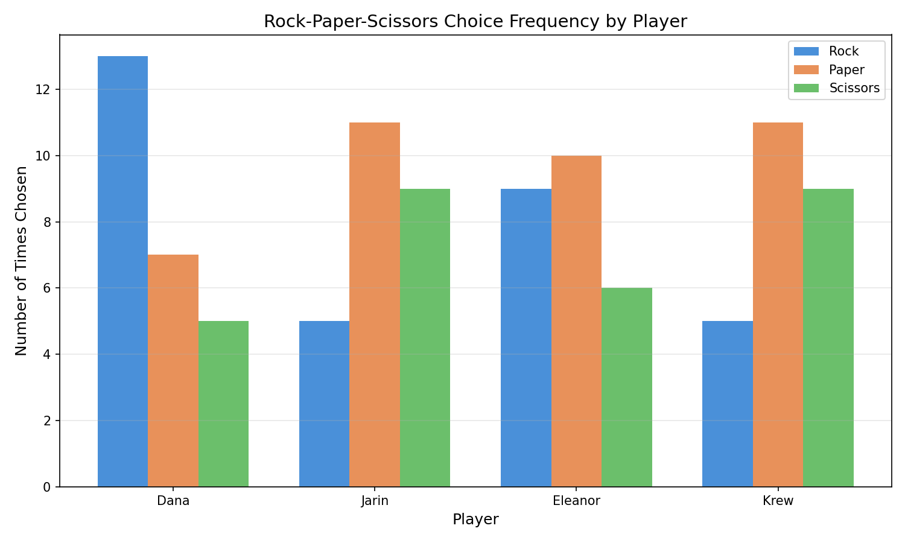
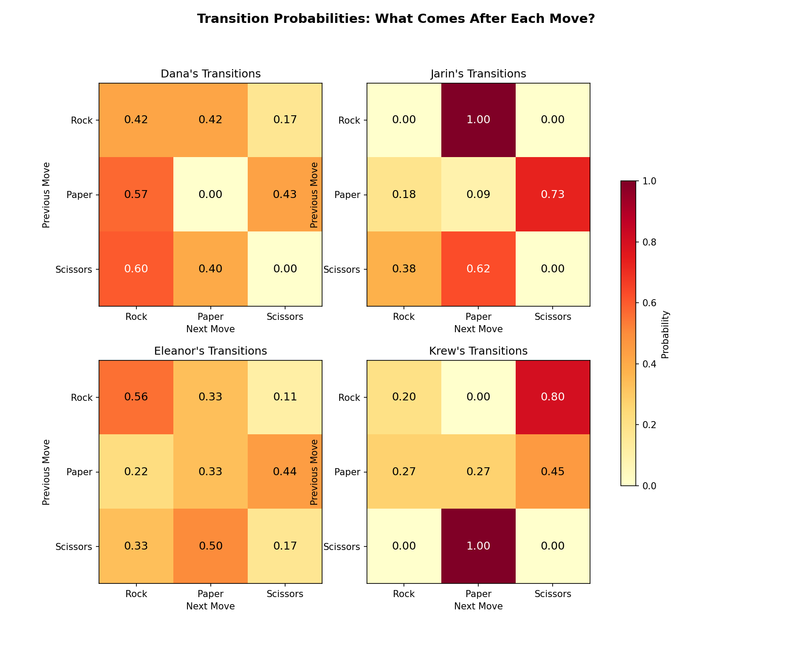
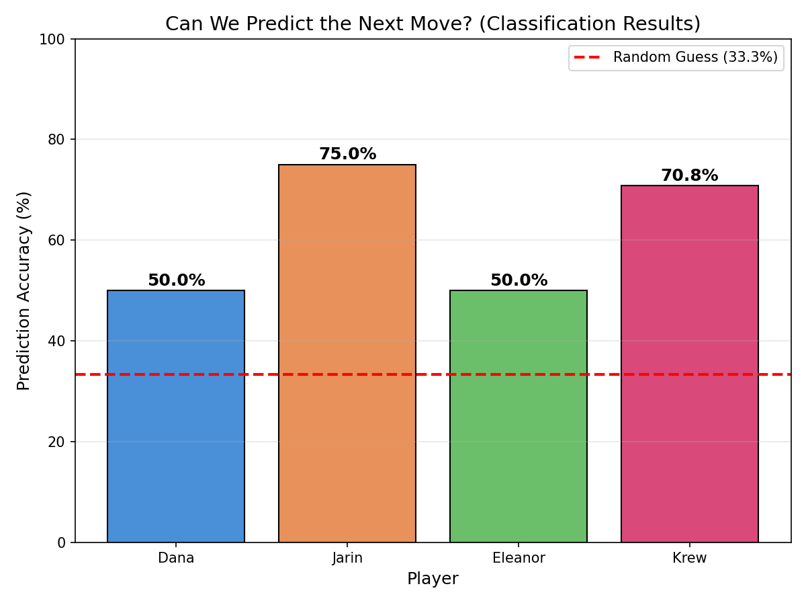
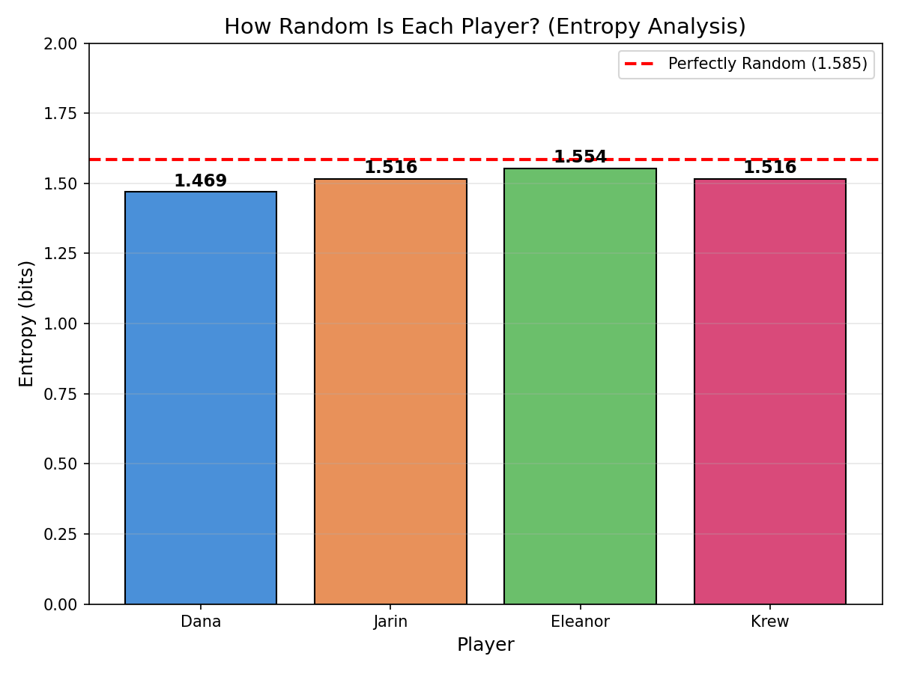
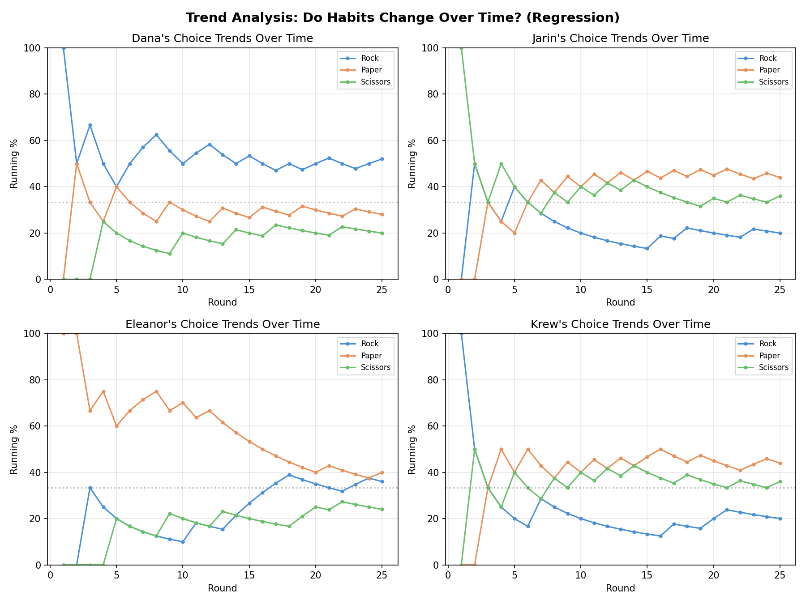

Key Findings
Our transition-matrix classifier beats random guessing by 28.2 percentage points. Humans are measurably non-random — but some are more predictable than others.
Graph 1Choice Frequencies
How often does each player pick rock, paper, or scissors? This is the baseline view of each player's preferences before we look for deeper patterns.

| Player | Rock | Paper | Scissors | Favorite |
|---|---|---|---|---|
| Dana | 13 (52%) | 7 (28%) | 5 (20%) | Rock |
| Jarin | 5 (20%) | 11 (44%) | 9 (36%) | Paper |
| Eleanor | 9 (36%) | 10 (40%) | 6 (24%) | Paper |
| Krew | 5 (20%) | 11 (44%) | 9 (36%) | Paper |
Graph 2Transition Patterns (correlation matrices)
A 3×3 matrix per player showing: given the previous move was X, how often is the next move Y? Strong cells (> 50%) are reliable tells.

Strongest tendencies per player
Dana
- After paper -> plays rock 57% of the time
- After scissors -> plays rock 60% of the time
Jarin
- After rock -> plays paper 100% of the time
- After paper -> plays scissors 73% of the time
- After scissors -> plays paper 62% of the time
Eleanor
- After rock -> plays rock 56% of the time
- After scissors -> plays paper 50% of the time
Krew
- After rock -> plays scissors 80% of the time
- After scissors -> plays paper 100% of the time
Graph 3Classification — Prediction Accuracy
Using each player's transition matrix, we predict their next move from their previous one, then measure how often the prediction matches the actual move.

| Player | Accuracy | vs. Random (33.3%) | Verdict |
|---|---|---|---|
| Dana | 50.0% | +16.7 pts | Somewhat predictable |
| Jarin | 75.0% | +41.7 pts | Very predictable |
| Eleanor | 50.0% | +16.7 pts | Somewhat predictable |
| Krew | 70.8% | +37.5 pts | Very predictable |
Graph 4Entropy — How Random Is Each Player?
Entropy (bits, base-2) measures unpredictability. The ceiling for a 3-choice game is log2(3) ≈ 1.585. Lower scores mean more detectable patterns.

| Player | Rounds | Favorite | Least Used | Longest Streak | Entropy (/1.585) |
|---|---|---|---|---|---|
| Dana | 25 | Rock | Scissors | 3 | 1.469 |
| Jarin | 25 | Paper | Rock | 2 | 1.516 |
| Eleanor | 25 | Paper | Scissors | 5 | 1.554 |
| Krew | 25 | Paper | Rock | 2 | 1.516 |
Graph 5Regression — Trends Over Time
Linear regression on each player's round-by-round choices detects slowly-shifting habits. A positive slope means the player picks that move more as the game goes on.

| Player | Rock slope (trend) | Paper slope (trend) | Scissors slope (trend) |
|---|---|---|---|
| Dana | +0.0015 (stable) | -0.0031 (stable) | +0.0015 (stable) |
| Jarin | -0.0008 (stable) | +0.0015 (stable) | -0.0008 (stable) |
| Eleanor | +0.0185 (increasing) | -0.0262 (decreasing) | +0.0077 (stable) |
| Krew | +0.0008 (stable) | +0.0000 (stable) | -0.0008 (stable) |
Clustering — Play-Style Groups (K-Means)
Each player becomes a 3-D point (% rock, % paper, % scissors). K-Means groups similar points. Implemented manually with NumPy so you can see every step.
Cluster 1
- Dana — Rock 52%, Paper 28%, Scissors 20%
Cluster 2
- Jarin — Rock 20%, Paper 44%, Scissors 36%
- Eleanor — Rock 36%, Paper 40%, Scissors 24%
- Krew — Rock 20%, Paper 44%, Scissors 36%
K-Means converged in 2 iterations.
Requirements Checklist
Every spec bullet from the ENGR 010 project description mapped to the code that satisfies it.
1. Data Management
| Requirement | Where It's Met |
|---|---|
| CSV import | data_loader.py -> load_csv() |
| JSON import | data_loader.py -> load_json() |
| TXT import | data_loader.py -> load_txt() |
| Cleaning & preprocessing | data_loader.py -> _clean_dataframe() (strip, lowercase, dropna) |
| Handles missing values | data_loader.py -> _clean_dataframe() dropna() |
| Handles outliers (invalid choices) | data_loader.py -> _clean_dataframe() filters to VALID_CHOICES |
| Organized storage | pandas DataFrames + nested dicts + NumPy arrays |
2. Analysis Features (3+ algorithms)
| Algorithm / Requirement | Where It's Met |
|---|---|
| Classification | analysis.py -> predict_next_move() + calculate_prediction_accuracy() |
| Clustering (K-Means, manual) | analysis.py -> cluster_users_kmeans() |
| Regression (least-squares) | analysis.py -> regression_analysis() |
| Statistical metrics | analysis.py -> compute_stats() (entropy, streaks, freq) |
| Patterns & correlations | analysis.py -> build_transition_matrix() |
| Comparative analysis | All dashboards compare every player side-by-side |
3. Visualization Features
| Requirement | Where It's Met |
|---|---|
| Static plots of distributions | visualizations.py -> plot_choice_frequencies() |
| Correlation-style matrix | visualizations.py -> plot_transition_heatmaps() |
| Trend analysis charts | visualizations.py -> plot_trends() |
| Interactive dashboard | index.html (this page) + CLI menu in rps_analysis.py |
4. Python Concepts
| Requirement | Where It's Met |
|---|---|
| Numerical data types | NumPy arrays + floats throughout analysis.py |
| Clear variable naming | transition_matrices, accuracy_dict, frequency_dict, etc. |
| Constants | VALID_CHOICES, USERS (ALL_CAPS) in analysis.py / visualizations.py |
| if/elif/else | rps_analysis.py -> run_interactive(); display_accuracy() |
| for loops | analysis.py -> every algorithm iterates USERS and VALID_CHOICES |
| while loops | analysis.py -> build_transition_matrix(); cluster_users_kmeans() |
| try/except | data_loader.py -> load_csv/json/txt; rps_analysis.py EOFError guard |
| 5+ custom functions | 20+ functions across data_loader / analysis / visualizations |
| Parameters & return values | Every function declares typed parameters and returns results |
| Docstrings | Every public function has a Parameters/Returns docstring |
| Multiple Python files | data_loader.py, analysis.py, visualizations.py, rps_analysis.py, build_dashboard.py |
| Lists (time-series) | analysis.py -> choices_list in build_transition_matrix() |
| Dictionaries (parameters) | freq_dict, accuracy_dict, stats, regression_results |
| NumPy arrays (signal processing) | np.zeros((3,3)) transitions; centers[] in K-Means |
| NumPy signal processing | argmax classification; Euclidean distance in K-Means |
| Pandas | data_loader.py reads/cleans; analysis.py filters DataFrames |
| 3+ matplotlib plot types | Bar (graphs 1,3,4), Heatmap (graph 2), Line (graph 5) |
| Statistical analysis | Entropy, accuracy %, regression slopes, frequency distributions |